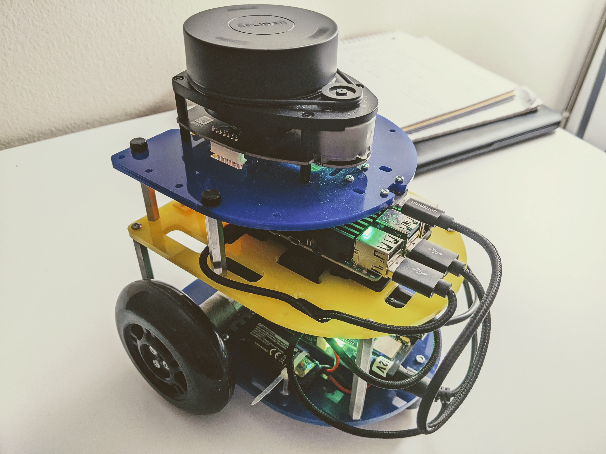

Hello! I'm Rahul Agrawal
I am a Robotics graduate student at University of Michigan - Ann arbor.
I specialize in perception and deep learning for computer vision. I have both industrial
and research experience in computer vision, SLAM, Robotics, and software engineering.
Currently I work as a Research Assistant at
UM Ford Center for Autonomous vehicles
and research transformer models for vision tasks. Prior to this, I worked as a software engineer
for more than two years at Fujikura Ltd. Japan.

A bot that autonomously explores a maze using SLAM and A* path planning.
The bot uses frontiers to explore the maze and maps the environment using 2D LIDAR.
After the exploration is completed, it uses A* to make the path back to its home position.
Transformers have shown advanced performance in computer vision tasks over existing architectures such as RNNs and CNNs.
I'm responsible for benchmarking state-of-the-art Transformer algorithms on autonomous driving datasets and
implementing novel Transformer-based deep learning algorithms for object detection/tracking/prediction.
This project implements a transformer based model, Segformer and benchmark on Cityscapes dataset for semantic segmentation.
The model achieves a mean Intersection over Union (mIoU) of 84%.
An autonomous bot that uses OpenCV to detect pickup and drop locations by matching the shapes and Dijksta's algorithm for shortest path planning.
The robot takes input the top view of the arena and starts at the green node. It travels by following the black line using a camera
and image processing, and the blue areas on the track are recognized as intersections.

Real-time prediction of electricity pricing signals is essential for scheduling load demand in price-directed grids.
This project introduces a novel model for electricity locational marginal price forecasting primarily centered on Relevance Vector Machine.
The proposed model is found to outperform the current state-of-the-art models with a Mean Absolute Error of 2.6 on the test set and
is sufficiently cheap computationally with a training time of 88 seconds. The work was published in
Applied Energy, Elsevier.